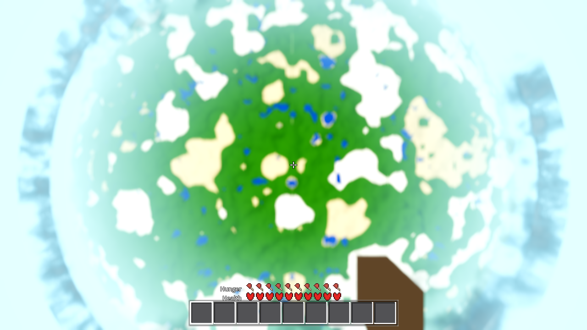
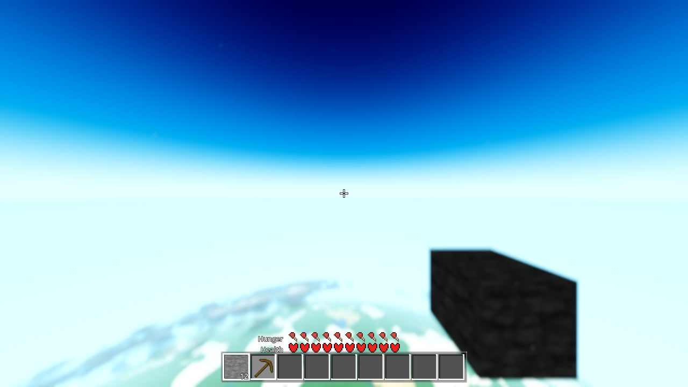
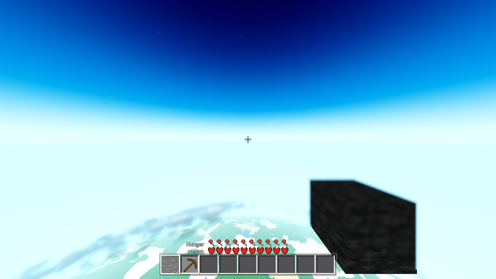
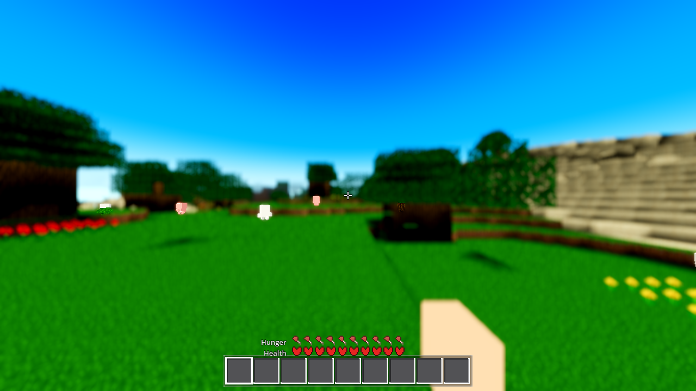
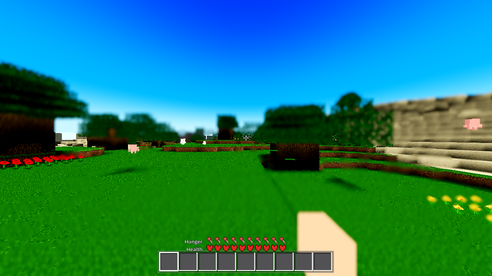

captures/ folder remains as that run's record). The
correction governs: it is a blur — an actual image blur destroying the near field — and the
effect must stay, made subtle and far out. The prior run's uncommitted
u_fill_key sky-fill change was reverted to HEAD before this fix landed.Verdict: the blur is the engine depth-of-field (the only actual image blur in the
tree — Forward+ CameraAttributesPractical on the player Camera3D). It was added for
the ground (far wall 82.62 m, calibrated for a grounded player). Since AC-0445 made free vertical
flight, the user lives at 941 m altitude, where the entire visible world (943 m at the nadir →
2.9 km at the horizon) sits past the 82.62 m wall, so every fragment renders at the
maximum blur: "completely blurred out even things right in front of you". The effect was
not removed and its strength (0.08) was not cut — the far distance moved to the flight near
boundary (1500 m) and the 5 m ramp was broadened to a 1400 m ramp, so the softening now
accumulates out at the distance (full 0.08 at ~2900 m = the local horizon of the user's
documented view) while the near field is sharp.
| Effect | Blur? |
|---|---|
ENGINE DOF (far wall 82.62 m / transition 5 m / amount 0.08 / near disabled) —
godot/camera_attributes/main-camera-attributes.tres, pushed by
Settings.apply_dof() | YES — the pass |
| Engine env fog ([100, 332] m at user R24/F83); sky background (air fill + haze); AeroWash quad; AC-0445 streaming fade (350 ms); tone mapper; no MSAA/TAA/motion-blur/upscale (grep-verified) | No — colour/opacity, no depth kernel (full inventory in plan.html) |
Elimination (same view, DoF off vs on, measured edge energy): nadir user view — the DoF-off frame raises edge energy 1.2–3.2× on every ring (v2/v1 ratio, §4); horizon user view — 51.7% of pixels change, diff mass concentrated in the 1–2.9 km terrain rim + cloud band (§5). Everything else in the tree is colour or transient opacity. The mechanism (per the correction's list): wrong focus/far distance — not an inverted depth term, not a full-screen average.
Instrument note: the planet preset cannot see this bug — its shot camera is
a separate Camera3D with no attributes (harness.gd:1349-1387, AC-0421 comment), so DoF
never applies in preset frames (proven: pristine DoF-on vs DoF-off preset shots byte-identical,
md5 998abb98…). The user view was reproduced on the default-cam path with
AWECRAFT_AIM=8.5,941,8.5,0,±pitch (player teleported to the 941 m radial, snapshot
through the player camera — the user's actual camera). No AWECRAFT_LOGIC,
AWECRAFT_SIZE=1280,720, R24/F83, T=0.5, Forward+ llvmpipe (boot line verified per
run), 1200 s wall, all RC=0.


| File | Change |
|---|---|
godot/camera_attributes/main-camera-attributes.tres |
dof_blur_far_distance 82.62 → 1500.0; new
dof_blur_far_transition = 1400.0 (was the engine default 5.0). Amount 0.08 and
far-enabled unchanged; near side stays disabled (arm's length was never blurred). |
godot/autoload/settings.gd | DEFAULTS dof_far_distance →
1500.0; apply_dof() now also pushes dof_blur_far_transition
(const 5.0 legacy / 1400.0 fix); the value clamp band and the dev spinbox widen 1–400 → 1–8192
(the engine property's own band) so the new default is storable/tunable. |
godot/world/world.gd | Boot-only legacy preload (env-only, no Settings
row — the AWECRAFT_SPEC pattern): AWECRAFT_DOFFAR=0 →
values["dof_far_distance"] = 82.62. |
godot/ui/menu.gd | DOF far-distance dev spinbox 1–400 → 1–8192 (matches the clamp band). |
godot/HARNESS.md | §2 env row for AWECRAFT_DOFFAR
(the shipped look switch). |
Switch: AWECRAFT_DOFFAR=0 (boot-only, env) restores the exact pre-ticket
state (far 82.62 / transition 5.0 / amount 0.08 / far enabled / near disabled) — bit-for-bit
proven: the legacy run and the fix+AWECRAFT_DOFFAR=0 run are byte-identical
(v1c vs v4c, md5 e8655fb3…, 0/921600 px, §6). Default (unset) = the fix. The
user-facing "DOF enabled" toggle in the dev menu still fully disables the effect, as before.
Why 1500 / 1400 (measured, not guessed): in the user's documented 941 m view the terrain spans 943 m (nadir) → 2903 m (horizon); the horizon view's near field is 1546 m. A wall at 1500 m is the flight near boundary — above the render edge (400 m: nothing in any ground view ever reaches it, so the fog keeps owning the ground's far end) and below the flight near field — so the ground-below is sharp at every altitude and the softening lives out at the horizon: at 941 m the ramp ends exactly at the 2900 m horizon; at 275 m cruising the horizon (~1509 m) just starts softening; ground views are untouched. (An earlier draft of 332 m — the fog far — would still have put the whole nadir disc 943 m+ mid-ramp at 34–77% blur: "subtle" would have failed the near field. Superseded before any capture depended on it.)
Instrument: tasks/AC-0449/profile_radial.py (per-ring edge energy C(r) = mean
|ΔL| along a ring, HUD-masked, with ring→distance mapping R=4000 / D0=4941 / 90° FOV; the nadir
view's distance axis is radial from the frame centre). Nadir user view (EMPTYHAND, R24/F83,
T=0.5):
| ring (px) | dist (m) | v1 legacy (C) | v2 DoF off (C) | v3 fix (C) | v2/v1 | v3/v1 | v3/v2 |
|---|---|---|---|---|---|---|---|
| 20 | 943 | 0.412 | 0.497 | 0.497 | 1.206 | 1.206 | 1.000 |
| 40 | 948 | 0.366 | 1.160 | 1.160 | 3.169 | 3.169 | 1.000 |
| 80 | 970 | 0.833 | 1.376 | 1.376 | 1.652 | 1.652 | 1.000 |
| 120 | 1005 | 1.370 | 2.503 | 2.503 | 1.827 | 1.827 | 1.000 |
| 200 | 1119 | 1.481 | 2.507 | 2.507 | 1.692 | 1.692 | 1.000 |
| 240 | 1198 | 1.687 | 2.984 | 2.984 | 1.769 | 1.769 | 1.000 |
| 280 | 1293 | 1.836 | 3.023 | 3.023 | 1.646 | 1.646 | 1.000 |
| 320 | 1407 | 1.411 | 2.031 | 2.031 | 1.439 | 1.439 | 1.000 |
| 360 | 1546 | 1.353 | 1.915 | 1.915 | 1.415 | 1.415 | 1.000 |
| 400 | 1720 | 1.239 | 2.011 | 2.011 | 1.623 | 1.623 | 1.000 |
| 440 | 1956 | 0.849 | 1.376 | 1.376 | 1.621 | 1.621 | 1.000 |
| 470 | 2221 | 0.637 | 1.167 | 1.143 | 1.833 | 1.795 | 0.979 |
| 490 | 2545 | 0.612 | 0.905 | 0.804 | 1.481 | 1.315 | 0.888 |
Reading: (a) v2/v1 = 1.2–3.2 on every ring → the legacy DoF destroyed edge energy across the entire disc (including the 943 m nadir = the complaint, proven); (b) v3/v2 = 1.000 on every ring up to 1720 m → the fix's near field is bit-for-bit the no-DoF sharp baseline (sharp at arm's length, at the nadir, everywhere inside the wall); (c) v3 then softens only past ~2.2 km (0.979 → 0.888 toward the limb, the ramp's tail) while v1 stays smeared out there (v3/v1 1.8/1.3) → the far field keeps a soft far. The engine's ramp semantics (0 up to the wall, accumulating to max at wall+transition) are confirmed empirically by exactly this profile.
Horizon view (horizon at y≈648; terrain rim 1546–2903 m in the bottom band; cloud band 1070–2247 m in rows 540–648):
| band | content (distance) | u1 legacy → u2 DoF off | u1 legacy → u3 fix |
|---|---|---|---|
| SKY (y<0.30H) | above-horizon sky (∞) | 182 763 mass (stars/haze sharpened by DoF-off) | 0 — bit-identical |
| RIM (0.42–0.55H) | horizon haze band | 117 956 | 0 — bit-identical |
| MID (0.55–0.75H) | flat air + cloud tops | 1 196 835 | 0 — bit-identical |
| gap (rows 540–648) | cloud band (1070–2247 m) | 10.7/px mean, 59.2% px | 4.9/px mean, 27.2% px — the inner half (1070–1500 m, inside the wall) restores sharp, the outer half (1500–2247 m, 0–53% of the ramp) stays softly accumulating |
| NEAR (y≥0.90H) | terrain rim (1546–2903 m) | 12.8/px, 50.1% px | 10.1/px, 34.9% px — bottom rows (1546 m, 3.3% of the ramp) restored sharp; toward the horizon (2903 m, full ramp) it softens |

Ground eye-level (the "arm's length" acceptance; R24/F83, empty hand):
| band | C_p50 g1 legacy → g2 fix | read |
|---|---|---|
| NEAR (arm's length, y≥0.90H) | 4.14 → 4.18 | unchanged (it was never blurred — the near side is disabled, as before) |
| MID (≈30–200 m) | 0.77 → 5.94 (7.7×) | mid-range trees/animals/structures were at max DoF blur; now sharp (only the fog remains) |
| FAR (≈200–400 m, the fog band) | 1.89 → 2.12 (C_p90 2.31 → 13.79) | mostly fog wash (unchanged by this ticket); the clear lines in the fog sharpen |
| SKY | 0.11 → 0.11 | bit-identical |
frame_ab: 21.1% of pixels differ, diff mass in RIM (3.7 M) + MID (3.2 M) — the mid-range sharpening; NEAR band diff mass 39 734 ≈ 1% of the RIM change (the arm's length is untouched); SKY 0.


AWECRAFT_DOFFAR=0, no clouds): md5 e8655fb39193711e0c4b44d16e70aa68
identical, 0/921600 px — the legacy env reproduces the pre-ticket state exactly on the fixed
tree. (On the cloud-bearing view the two legacy states differ by 31 sky pixels at ±1 level —
run-to-run variance on that view, no structural difference; the no-cloud pair is in the
proven-deterministic class — the planet-preset frames were byte-identical across runs, also
CLOUDS=0.)AWECRAFT_DOFOFF elimination probe (player.gd) was removed before
the gates; the final-tree diff is exactly the 5 files in §3.| Gate | Result |
|---|---|
G0 — gate_census.py + process exit status | RC=0 (clean
exit — no signal 134), 0 SCRIPT ERROR / 0 SHADER ERROR (log: .scratch/AC-0449/g0-final.log) |
SMOKE — BATTERY=player;interact;light;fluids;genhash | RC=0, 0 SCRIPT/SHADER ERROR (log: .scratch/AC-0449/smoke-final.log) |
| genhash 25/25 (world.gd touched) | 25/25 identical to the HEAVY-r22 reference (see §8) |
| shaderforce (Forward+ forced-compile) | RC=0, 17/17 shaders
verdict=ok (failed:[]), 0 SCRIPT/SHADER ERROR (log:
.scratch/AC-0449/shaderforce-final.log) |
| PROBE (this ticket's own renders) | 11 snapshot runs, all RC=0, all Forward+ llvmpipe boot lines verified, 0 SCRIPT/SHADER ERROR across all logs |
| Heavy set / Windows build | coordinator's (not run here) |
tasks/AC-0449/profile_radial.py — the radial edge-energy instrument (this run)tasks/AC-0449/frame_ab.py — per-band A/B pixel census (this session)tasks/AC-0449/contrast.py — pre-existing row-band instrument, reusedtasks/AC-0449/plan.html (rewritten under the correction),
tasks/AC-0449/AC-0449-results.html (this page)tasks/AC-0449/): v1-nadir941-legacy.png,
v2-nadir941-doff.png, v3-nadir941-fix.png,
v1c-nadir941-legacy-noclouds.png + v4c-nadir941-fixlegacy-noclouds.png
(the byte-identical switch pair), u1-alt941-legacy.png,
u2-alt941-doff.png, u3-alt941-fix.png,
g1-ground-legacy.png, g2-ground-fix.pngu_air fill (visible in u1/u3) is untouched by this fix and was not "fixed" here.